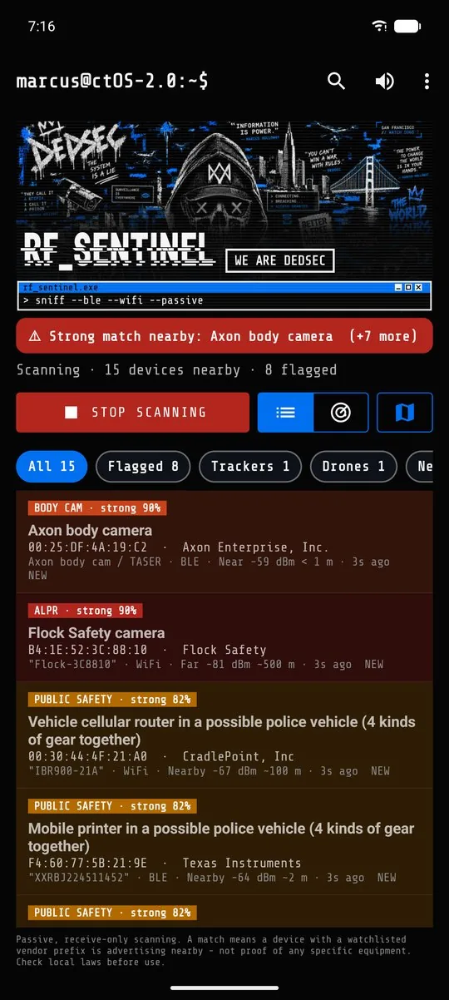
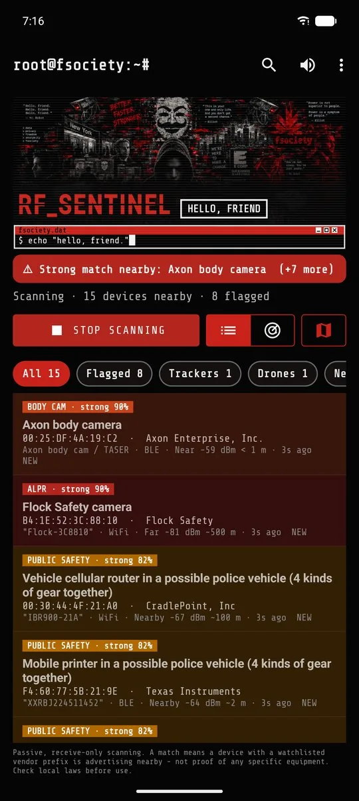

marcus@ctOS-2.0:~$ ./rf_sentinel --passive
RF_SENTINEL - police detector for Android
Incase you end up on this page, you'll be redirected to RFSentinel Mirrored Documentation page. Please respect Cisco the official author by starring him his official github page
https://youneed.rehab/RFSentinel/docs/
https://github.com/CIS-C0/RFSentinel

